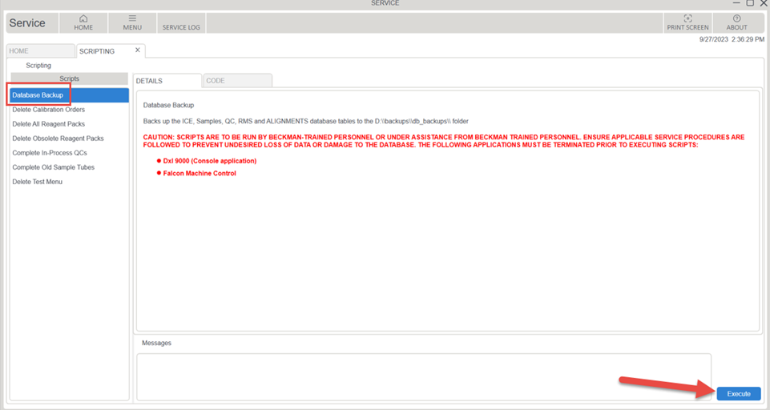

Backing Up the Databases Using the Service App
This topic includes information about how to back up the databases using the Service App.
| Table of Contents |
|---|
| About this Process |
| Backing Up the Databases Using the Service App |
About this Process
The Database Backup script in the Service App backs up all major system databases, including those containing customer data.
Note: For more information about how this and other processes interact with backups and settings files, see
Process Interactions with Data Files and Databases.
| Impacted Data files/Databases | |
|---|---|
| -.data | |
| -config Backup.json | |
| .Backup | |
| ICE_DB | Backed up |
| Samples_DB | Backed up |
| QC_DB | Backed up |
| RMS_DB | Backed up |
| Alignments_DB | Backed up |
Backing Up the Databases Using the Service App
Perform this procedure to back up the databases using the Service App.
- Sign in to use the BeckmanAdmin account. See Signing In to Use the BeckmanAdmin Account for more information.
-
Be sure the instrument is in a GREEN (Ready) or YELLOW (Paused) status.
- If the folder
DB_Backups does not already exist in
D:\Backups
- Create a new folder in D:\Backups
- Rename the new folder DB_Backups
Note: The path to the new folder will be D:\Backups\DB_Backups. The system will save the database to D:\Backups\DB_Backups\<DB file name> -
In the Service App go to Service App > Scripting to open the Scripting page.
-
Select Database Backup.Note:
When you perform this operation the Console App and the Machine Control App will close.

- Select
Execute.
Note: The system will save the database to D:\Backups\DB_Backups. If the folder does not exist, you may encounter error messages.
-
Look in D:\Backups\DB_Backups to verify the files saved correctly. You can rename the file to add the current date.Note: If the notification Exception found while running sql script is displayed, instead use Microsoft SQL Server Management Studio to back up the databases. See Backing Up the Databases Using Microsoft SQL Server Management Studio for more information.